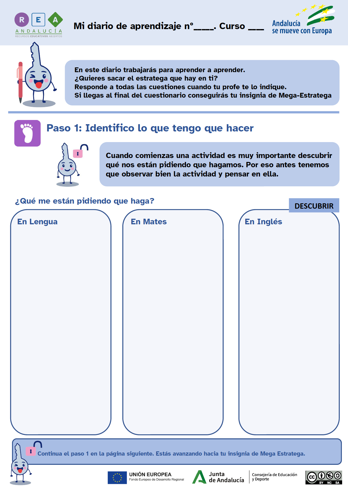

You already know what your challenge is and the activity that will bring you closer to the goal. But to succeed in your journey, you will need some strategies that will help you in this and other similar tasks. You will discover them in a diary that we call your Learning Journal.
This time we suggest you open it and complete STEP 1 of the Learning Journal before you start the activity you have just read about!
Click here to download your Learning Journal.

Remember:
- Ask your teacher whether you will fill it in on paper or on the computer.
- If you fill it in on the computer, don't forget to save it on your computer when you finish it! Cheer up, you'll do great!
¿Necesitas más ayuda?
Ya conoces qué reto te proponemos alcanzar y te acabamos de plantear una actividad que te acercará a la meta. Pero para tener éxito en tu camino, necesitarás algunas estrategias que te servirán para esta y otras tareas parecidas. Las irás descubriendo en un diario que llamamos tu Diario de aprendizaje. En esta ocasión te proponemos que lo abras y completes el PASO 1 del Diario de aprendizaje antes de empezar la actividad que acabas de leer.
Haz clic aquí para descargar tu Diario de aprendizaje.
Recuerda: Pregunta a tu profesor o profesora si rellenarás la ficha en papel o en el ordenador. Si la rellenas en el ordenador, ¡no te olvides de guardarla en tu ordenador cuando lo termines!
¡Ánimo, que lo harás genial!